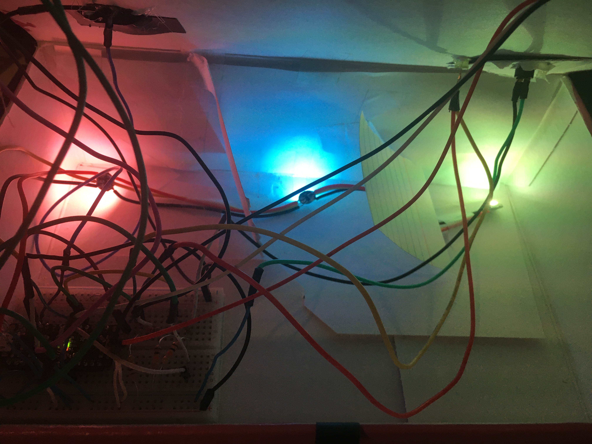
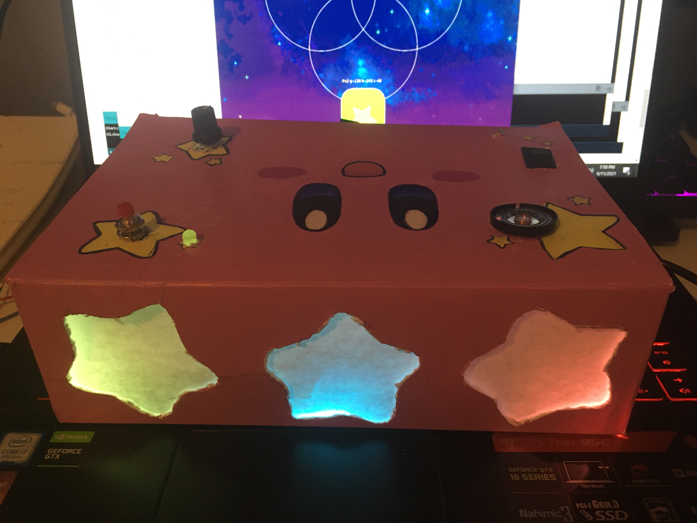
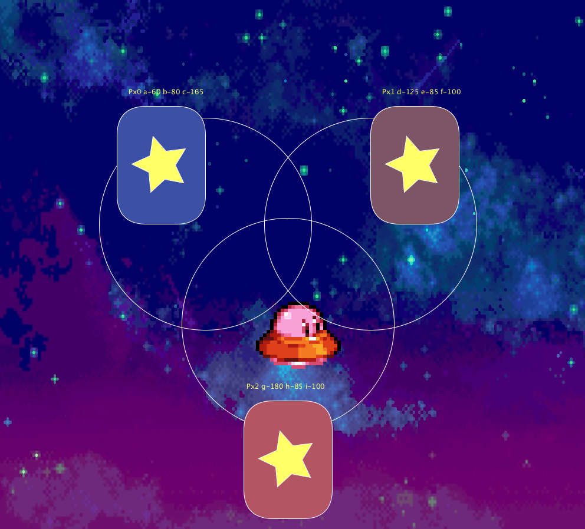
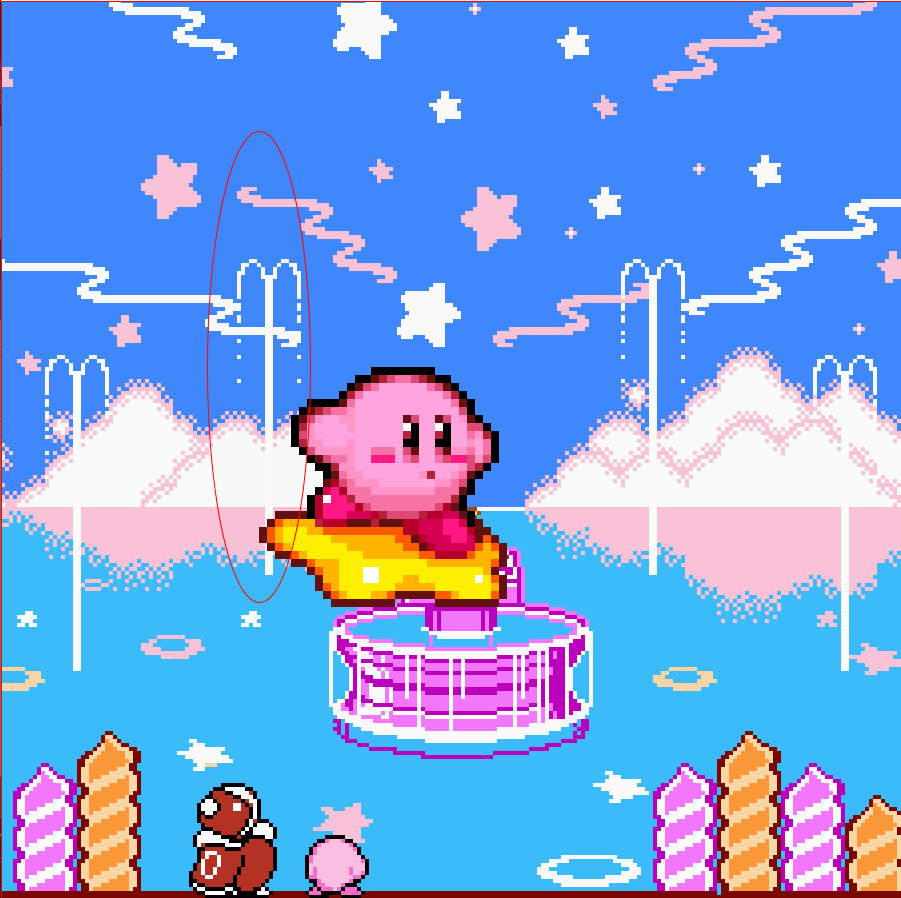

Phase 1 fade
Phase 1 graph
Colors changing using the photocell! I used a flashlight on the photocell which changes the colors of the neopixels.
Microbox to Processing and 'Processing to Microbox
   In phase 3,since my music box was kirby, I wanted to add elements of the Kirby game series. Stars is a motif used in the the series, where Kirby has a star hoverboard. Stars are also used in the game to transport kirby from one part of the game to another. I also messed with the code that changes the shape of the circle to change the width and height of it. I'm not very confident with coding and was a bit challenging to understand the concept. I thought I had to completely change the code and make it SUPER different and I was very put off by doing this project.After talking to Steve about some changes I can do, just by inserting images I now understood what he meant to change the code to make it different from the original. I was able to do simple changes that completely changed the original design and outlook.In the arduino to processing, I had the photocell float up and down the screen, I also used the potentiometer to have kirby move left to right. I had the switch to change different kirby, Kirby floating on the star and kirby floating down with an umbrella. In the processing to the arduino, I created a galaxy star map where UFO kirby follows the mouse towards the landing pad to change the colors of the stars of the box. I also added rotating stars in the color changing landing pad for a nice touch.